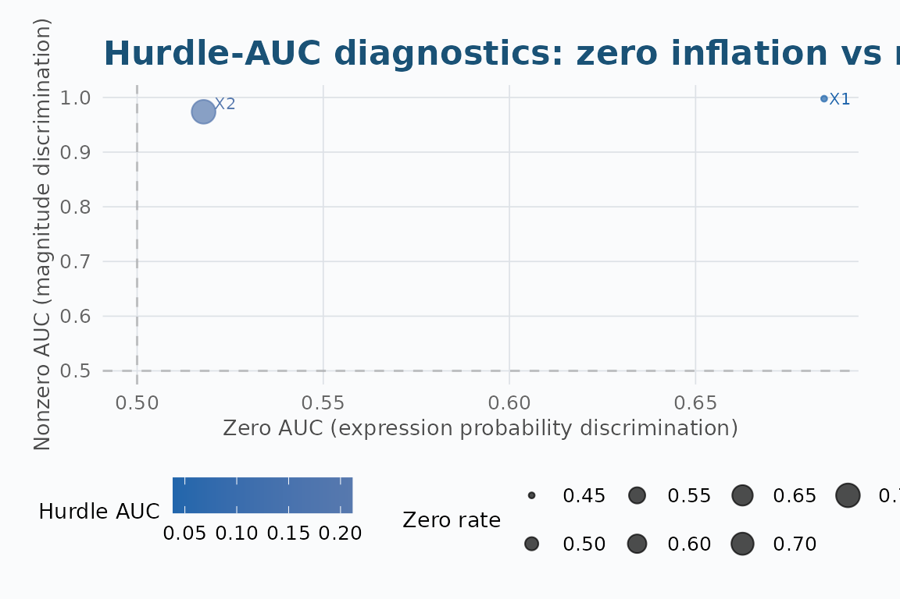
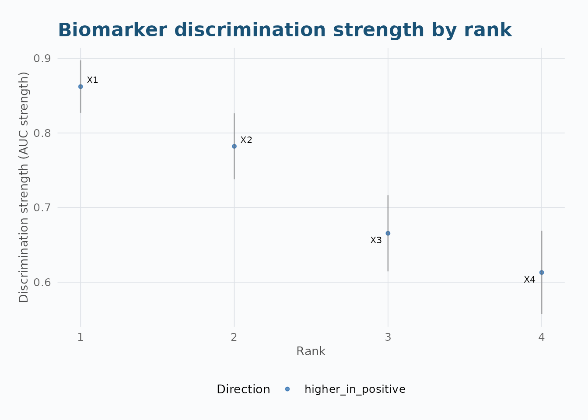
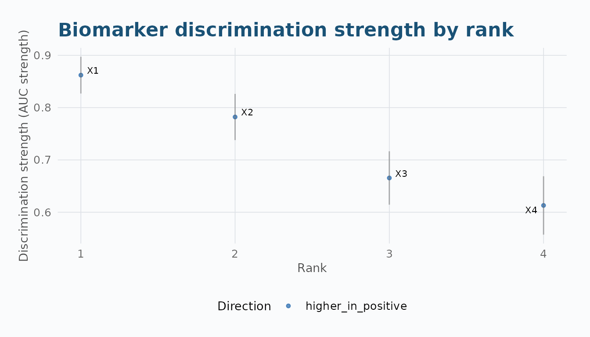
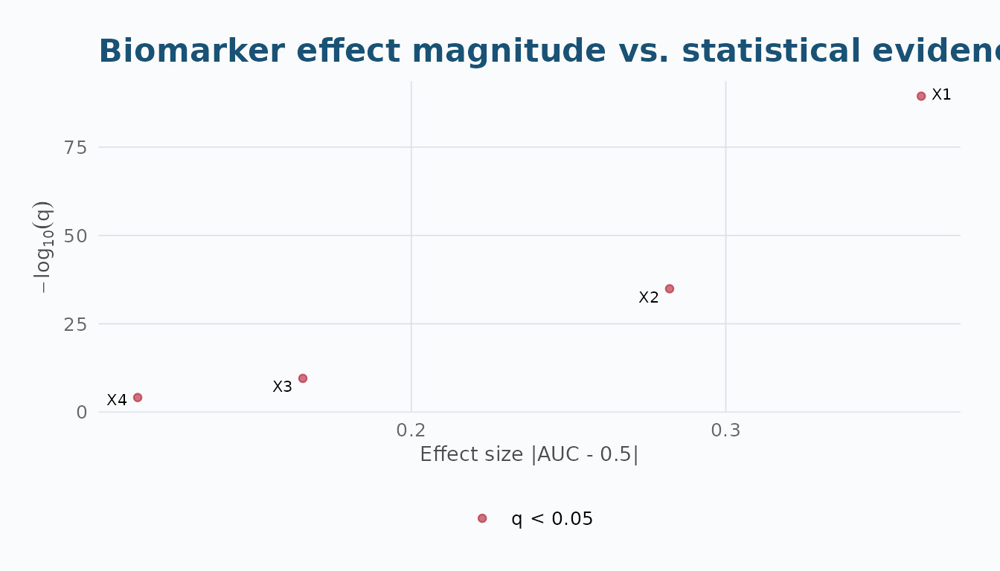
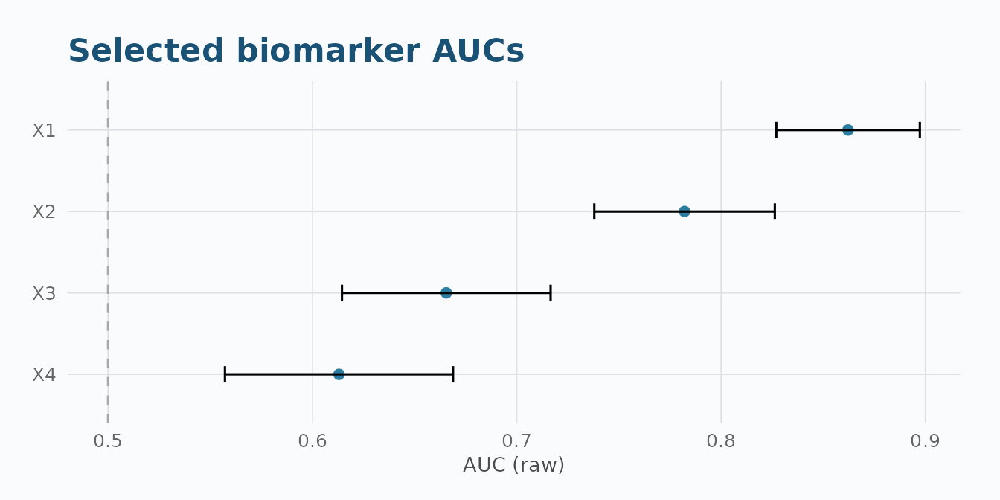
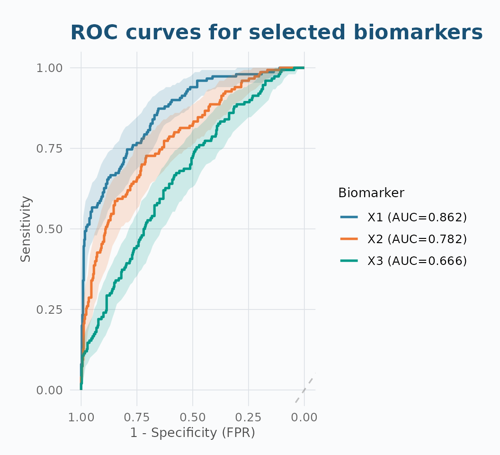
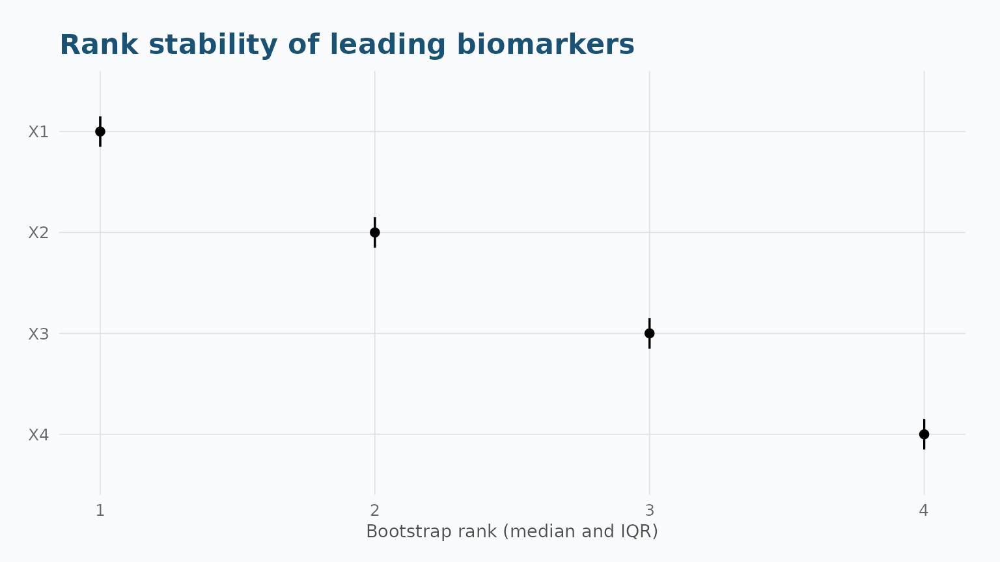
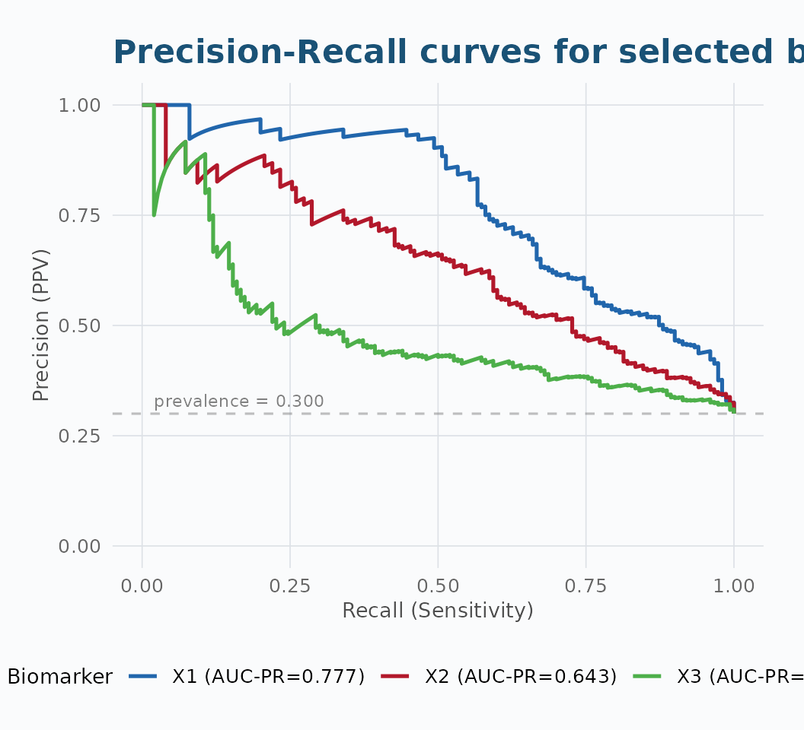
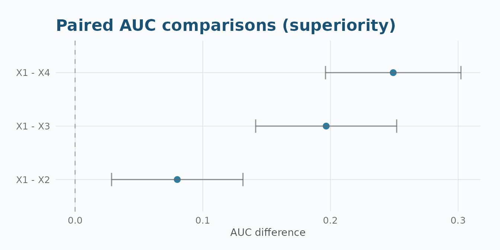

Overview
aucmat is a matrix-first R package for screening and
ranking molecular biomarkers against binary outcomes. It reports
direction-preserving AUCs and provides inference,
multiplicity adjustment, paired comparisons, bootstrap rank stability,
and publication-quality visualizations.
This vignette uses simulated data throughout, to keep the API examples fast and self-contained. For a worked example on real biomarker data – Olink plasma proteomics from a randomized clinical trial, including a real-data negative control and bootstrap validation of the findings – see the Real-Data Application: BeatMG Proteomics vignette.
Function Reference
| Category | Function | Description |
|---|---|---|
| Screening | aucmat() |
Screen all biomarkers against a binary outcome |
| Inference | compare_auc() |
Paired comparisons (superiority, NI, equivalence) |
compare_auc_global() |
Omnibus Wald test: H0 all AUCs equal | |
auc_stability() |
Bootstrap rank-stability analysis | |
| Simulation | simulate_auc_matrix() |
General-purpose matrix simulator (recommended) |
validate_simulation() |
Repeated-draw calibration check | |
generate_data_probit() |
Latent probit: free AUC + correlation | |
generate_data_analytical() |
Sequential binormal | |
generate_auc_vector() |
Single score, exact empirical AUC | |
generate_auc_cor_vector() |
Single score, exact AUC + approx Pearson r | |
simulate_auc_correlation() |
Monte Carlo (AUC, r) sampling distribution | |
| Visualization | plot_auc_rank() |
Ordered discrimination strengths with CIs |
plot_auc_volcano() |
Effect magnitude vs statistical evidence | |
plot_auc_forest() |
Selected AUCs with confidence intervals | |
plot_auc_stability() |
Bootstrap rank distributions | |
plot_roc_top() |
ROC curves for selected biomarkers (CI ribbons by default) | |
plot_auc_pr() |
Precision-Recall curves for imbalanced data | |
| S3 Methods |
print(), summary(),
as.data.frame(), plot(),
subset()
|
For aucmat_screen objects |
plot() |
Also dispatches on aucmat_compare (forest of pairwise
differences) |
1. How Data is Simulated
The AUC (Area Under the ROC Curve) answers: if I pick one positive and one negative subject at random, how often does the positive have a higher biomarker value? An AUC of 0.5 is useless (coin flip); 1.0 is perfect separation.
The Binormal Model
Under the equal-variance binormal model, biomarker values are normally distributed in each class with a shared variance:
X \mid Y = 0 \sim \mathcal{N}(\mu_0, \sigma^2), \qquad X \mid Y = 1 \sim \mathcal{N}(\mu_1, \sigma^2)
The AUC is linked to the standardized mean separation \delta = (\mu_1 - \mu_0)/\sigma:
\text{AUC} = \Phi\!\left(\frac{\delta}{\sqrt{2}}\right)
To target a specific AUC, invert: \delta = \sqrt{2} \cdot \Phi^{-1}(\text{AUC}). For example, AUC = 0.8 requires \delta \approx 1.19 — the positive class mean is about 1.19 standard deviations above the negative class mean.
Simulation Approaches
| Function | AUC + Correlation | Approach | Speed |
|---|---|---|---|
simulate_auc_matrix() |
Independent (named structures) | Class-conditional MVN, closed-form \delta | Fast |
generate_data_probit() |
Independent (full matrix) | Latent MVN, numerical \rho calibration | Slower |
generate_data_analytical() |
Linked (binormal constraint) | Sequential decomposition | Fast |
generate_auc_vector() |
AUC only (exact) | Rank construction | Instant |
generate_auc_cor_vector() |
AUC exact, Pearson r approx | Rank + Box-Cox tuning | Fast |
simulate_auc_correlation() |
Sampling distribution | Monte Carlo binormal | Moderate |
2. Simulating Biomarker Data
2.1 simulate_auc_matrix() — Recommended General-Purpose
Simulator
Draws class-conditional multivariate normal biomarkers with a named correlation structure. The outcome is fixed before any biomarker is drawn.
set.seed(42)
sim <- simulate_auc_matrix(
n = 500, prevalence = 0.3,
target_aucs = c(0.90, 0.80, 0.70, 0.65),
correlation = 0.3, structure = "exchangeable"
)
data.frame(Target = sim$target_aucs, Achieved = round(sim$achieved_aucs, 4))
#> Target Achieved
#> X1 0.90 0.8622
#> X2 0.80 0.7821
#> X3 0.70 0.6655
#> X4 0.65 0.6130Correlation Structures
# Exchangeable: all off-diagonal entries equal
sim_ex <- simulate_auc_matrix(
n = 500, prevalence = 0.3,
target_aucs = c(0.9, 0.8, 0.7, 0.65),
correlation = 0.4, structure = "exchangeable", seed = 1
)
# AR(1): correlation decays with distance |i-j|
sim_ar1 <- simulate_auc_matrix(
n = 500, prevalence = 0.3,
target_aucs = c(0.9, 0.8, 0.7, 0.65),
correlation = 0.6, structure = "ar1", seed = 1
)
# Block: within-block and between-block correlations
sim_blk <- simulate_auc_matrix(
n = 500, prevalence = 0.3,
target_aucs = c(0.9, 0.8, 0.7, 0.65),
structure = "block", block_sizes = c(2, 2),
rho_within = 0.6, rho_between = 0.1, seed = 1
)
cat("Exchangeable:\n")
#> Exchangeable:
round(sim_ex$achieved_correlation, 3)
#> X1 X2 X3 X4
#> X1 1.000 0.366 0.323 0.366
#> X2 0.366 1.000 0.390 0.423
#> X3 0.323 0.390 1.000 0.350
#> X4 0.366 0.423 0.350 1.000
cat("\nAR(1):\n")
#>
#> AR(1):
round(sim_ar1$achieved_correlation, 3)
#> X1 X2 X3 X4
#> X1 1.000 0.563 0.281 0.176
#> X2 0.563 1.000 0.593 0.375
#> X3 0.281 0.593 1.000 0.572
#> X4 0.176 0.375 0.572 1.000
cat("\nBlock:\n")
#>
#> Block:
round(sim_blk$achieved_correlation, 3)
#> X1 X2 X3 X4
#> X1 1.000 0.579 0.026 0.068
#> X2 0.579 1.000 0.088 0.125
#> X3 0.026 0.088 1.000 0.566
#> X4 0.068 0.125 0.566 1.000Feasibility Diagnostics
When the requested correlation matrix is not positive definite,
feasibility = "nearest" projects to the closest valid
matrix:
sim_adj <- simulate_auc_matrix(
n = 200, prevalence = 0.3,
target_aucs = c(0.8, 0.7, 0.6, 0.55),
correlation = -0.5, structure = "exchangeable",
feasibility = "nearest", seed = 1
)
sim_adj$feasibility
#> $status
#> [1] "adjusted"
#>
#> $adjusted
#> [1] TRUE
#>
#> $min_eigenvalue
#> [1] -0.5
#>
#> $frobenius_adjustment
#> [1] 0.5773503
#>
#> $max_abs_adjustment
#> [1] 0.1666667Supplied Outcome
When y is supplied, its exact values, class counts, and
row order are preserved:
y_sup <- rbinom(300, 1, 0.3)
sim_y <- simulate_auc_matrix(
y = y_sup,
target_aucs = c(0.85, 0.75),
correlation = 0.3, structure = "exchangeable", seed = 1
)
table(original = y_sup, generated = sim_y$data$truth)
#> generated
#> original 0 1
#> 0 209 0
#> 1 0 912.2 validate_simulation() — Calibration Check
A single draw is not evidence a simulator is calibrated. This function repeats the spec many times and reports bias, RMSE, Monte Carlo SE, and target-interval hit rates for both AUCs and correlations.
val <- validate_simulation(
n = 300, prevalence = 0.3,
target_aucs = c(0.85, 0.75, 0.65),
correlation = 0.3, structure = "exchangeable",
times = 100, seed = 1
)
print(val)
#> <aucmat_simulation_validation> 100/100 successful replicates
#>
#> AUC calibration:
#> biomarker bias rmse mc_se hit_rate
#> X1 -0.0004 0.0230 0.0023 0.66
#> X2 -0.0020 0.0290 0.0029 0.43
#> X3 -0.0047 0.0326 0.0032 0.46
#>
#> Correlation calibration (upper triangle):
#> Mean bias: 0.0034
#> Mean RMSE: 0.0543
#> Mean hit rate: 0.65A bias large relative to the Monte Carlo SE signals a calibration problem.
2.3 Other Simulators
set.seed(42)
# Latent probit: independent AUC + correlation
sim_p <- generate_data_probit(
n = 500,
target_aucs = c(0.90, 0.80, 0.70, 0.65),
corr_matrix = matrix(c(
1.0, 0.4, 0.2, 0.1,
0.4, 1.0, 0.3, 0.2,
0.2, 0.3, 1.0, 0.3,
0.1, 0.2, 0.3, 1.0
), 4, 4),
prevalence = 0.3
)
# Binormal sequential
sim_a <- generate_data_analytical(
n = 500, prevalence = 0.3,
target_aucs = c(0.85, 0.75, 0.65),
corr_matrix = matrix(c(1, 0.3, 0.1, 0.3, 1, 0.2, 0.1, 0.2, 1), 3, 3)
)
# Exact empirical AUC for a single biomarker
y_raw <- rbinom(200, 1, 0.3)
out_auc <- generate_auc_vector(y_raw, target_auc = 0.80)
# Exact AUC + approximate Pearson correlation
out_cor <- generate_auc_cor_vector(y_raw, target_auc = 0.80, target_cor = 0.45)
# Monte Carlo sampling distribution
mc <- simulate_auc_correlation(y_raw, target_auc = c(0.7, 0.8, 0.9),
n_sim = 200, seed = 123)
# Compare achieved vs target
cat("=== Latent probit ===\n")
#> === Latent probit ===
data.frame(Target = sim_p$target_aucs, Achieved = round(sim_p$achieved_aucs, 4))
#> Target Achieved
#> 1 0.90 0.8910
#> 2 0.80 0.7951
#> 3 0.70 0.6776
#> 4 0.65 0.6433
cat("\n=== Binormal sequential ===\n")
#>
#> === Binormal sequential ===
data.frame(Target = c(0.85, 0.75, 0.65), Achieved = round(sim_a$achieved_aucs, 4))
#> Target Achieved
#> 1 0.85 0.8556
#> 2 0.75 0.7546
#> 3 0.65 0.6483
cat("\n=== Single AUC vector ===\n")
#>
#> === Single AUC vector ===
c(Requested = out_auc$requested_auc, Achieved = round(out_auc$achieved_auc, 4))
#> Requested Achieved
#> 0.8 0.8
cat("\n=== AUC + correlation vector ===\n")
#>
#> === AUC + correlation vector ===
c(AUC_req = out_cor$requested_auc, AUC_ach = round(out_cor$achieved_auc, 4),
Cor_req = out_cor$requested_cor, Cor_ach = round(out_cor$achieved_cor, 4))
#> AUC_req AUC_ach Cor_req Cor_ach
#> 0.80 0.80 0.45 0.45
cat("\n=== Monte Carlo (mean achieved AUC by target) ===\n")
#>
#> === Monte Carlo (mean achieved AUC by target) ===
aggregate(auc ~ target_auc, data = mc$results, mean)
#> target_auc auc
#> 1 0.7 0.7012948
#> 2 0.8 0.7988312
#> 3 0.9 0.90379482.4 simulate_auc_copula() — Gaussian Copula +
Perturbation
The copula simulator separates correlation structure (Phase 1: Gaussian copula) from discriminative signal (Phase 2: iterative AUC perturbation), achieving both accurate correlations and accurate AUCs without the tradeoffs of the binormal model.
sim_cop <- simulate_auc_copula(
n = 300, prevalence = 0.3,
target_aucs = c(0.85, 0.75, 0.65),
corr_matrix = matrix(c(1, 0.4, 0.2, 0.4, 1, 0.3, 0.2, 0.3, 1), 3, 3),
seed = 1
)
data.frame(
Target = sim_cop$target_aucs,
Phase1 = round(sim_cop$phase1_aucs, 3),
Achieved = round(sim_cop$achieved_aucs, 3)
)
#> Target Phase1 Achieved
#> X1 0.85 0.855 0.855
#> X2 0.75 0.754 0.754
#> X3 0.65 0.652 0.6522.5 Hurdle-AUC for Zero-Inflated Data
scRNA-seq, microbiome, and detection-limited assays produce data
where 60%+ of values are exactly zero. Standard AUC is near 0.5 on such
data because the binormal assumption breaks. hurdle_auc()
uses a two-stage model:
- Zero hurdle: P(X=0 | class) via logistic regression
- Magnitude: standard AUC on nonzero values only
sim_hur <- simulate_hurdle_auc(
n = 400, prevalence = 0.3,
target_hurdle_aucs = c(0.85, 0.72),
zero_rate_neg = c(0.55, 0.80),
zero_rate_pos = c(0.25, 0.70), seed = 1
)
Xh <- as.matrix(sim_hur$data[, 1:2])
yh <- sim_hur$data$truth
# Standard AUC vs Hurdle AUC
fit_std <- aucmat(Xh, yh, ci = "none")
fit_hur <- hurdle_auc(Xh, yh)
data.frame(
Biomarker = paste0("X", 1:2),
Standard_AUC = round(fit_std$results$auc_strength, 3),
Hurdle_AUC = round(fit_hur$results$hurdle_auc, 3),
Zero_AUC = round(fit_hur$results$zero_auc, 3),
Nonzero_AUC = round(fit_hur$results$nonzero_auc, 3)
)
#> Biomarker Standard_AUC Hurdle_AUC Zero_AUC Nonzero_AUC
#> 1 X1 0.861 0.039 0.685 0.998
#> 2 X2 0.549 0.211 0.518 0.974
plot_hurdle_diagnostics(fit_hur)
3. Matrix Screening: aucmat()
aucmat() screens every biomarker column against a binary
outcome with direction-preserving AUCs and configurable inference.
X <- as.matrix(sim$data[, 1:4])
y <- sim$data$truth
fit <- aucmat(X, y, ci = "delong", adjust = "BH")
print(fit)
#> <aucmat_screen> 4 biomarkers
#> Outcome: 150 positive / 350 negative (positive = pos)
#> CI: delong | adjust: BH | na_action: featurewise
#>
#> Top biomarkers by discrimination strength:
#> rank biomarker auc_raw auc_strength effect_direction p_value
#> 1 X1 0.8621524 0.8621524 higher_in_positive 9.539568e-91
#> 2 X2 0.7821333 0.7821333 higher_in_positive 5.983288e-36
#> 3 X3 0.6655238 0.6655238 higher_in_positive 2.084701e-10
#> 4 X4 0.6130095 0.6130095 higher_in_positive 7.219263e-05
#> q_value status
#> 3.815827e-90 ok
#> 1.196658e-35 ok
#> 2.779602e-10 ok
#> 7.219263e-05 ok
summary(fit)
#> aucmat screening summary
#> ========================
#> Total samples: 500
#> Usable samples: 500
#> Excluded (NA y): 0
#> Positive class: pos (n = 150)
#> Negative class: neg (n = 350)
#>
#> Biomarkers screened: 4
#> Status counts:
#>
#> ok
#> 4
#>
#> Missingness:
#> Mean missing fraction: 0
#> Max missing fraction: 0
#> Fully observed: 4 biomarkers
#>
#> Multiplicity (BH):
#> q < 0.05: 4 biomarkers
#> q < 0.01: 4 biomarkersResult Columns
| Column | Description |
|---|---|
biomarker |
Column name from X |
auc_raw |
AUC on observed direction (may be < 0.5) |
auc_strength |
0.5 + |\text{auc\_raw} - 0.5| — always ≥ 0.5 |
effect_direction |
higher_in_positive or
lower_in_positive
|
std_error |
DeLong or bootstrap standard error |
conf_low, conf_high
|
Confidence interval bounds |
p_value, q_value
|
Raw and multiplicity-adjusted p-values |
rank |
Ordered by auc_strength descending |
n_used, n_pos, n_neg
|
Sample counts per biomarker |
n_missing, missing_fraction
|
Missing data diagnostics |
status |
ok, constant,
insufficient_positive, etc. |
warning |
small_class_counts, high_missingness,
etc. |
Configuration Options
# DeLong CIs with Benjamini-Hochberg adjustment (default)
fit_delong <- aucmat(X, y, ci = "delong", adjust = "BH")
# Stratified bootstrap CIs
fit_boot <- aucmat(X, y, ci = "bootstrap", boot_n = 2000, seed = 42)
# No inference (fastest — AUC only, no CIs or p-values)
fit_none <- aucmat(X, y, ci = "none")
# Bonferroni adjustment (stricter than BH)
fit_bonf <- aucmat(X, y, ci = "delong", adjust = "bonferroni")
# Complete-case analysis (remove rows with any NA)
fit_comp <- aucmat(X, y, ci = "delong", na_action = "complete")
# Retain data for downstream plotting without supplying X, y again
fit_keep <- aucmat(X, y, ci = "delong", retain_data = TRUE)S3 Methods for aucmat_screen
print(fit) # compact top-10 display
#> <aucmat_screen> 4 biomarkers
#> Outcome: 150 positive / 350 negative (positive = pos)
#> CI: delong | adjust: BH | na_action: featurewise
#>
#> Top biomarkers by discrimination strength:
#> rank biomarker auc_raw auc_strength effect_direction p_value
#> 1 X1 0.8621524 0.8621524 higher_in_positive 9.539568e-91
#> 2 X2 0.7821333 0.7821333 higher_in_positive 5.983288e-36
#> 3 X3 0.6655238 0.6655238 higher_in_positive 2.084701e-10
#> 4 X4 0.6130095 0.6130095 higher_in_positive 7.219263e-05
#> q_value status
#> 3.815827e-90 ok
#> 1.196658e-35 ok
#> 2.779602e-10 ok
#> 7.219263e-05 ok
summary(fit) # counts, statuses, missingness, multiplicity
#> aucmat screening summary
#> ========================
#> Total samples: 500
#> Usable samples: 500
#> Excluded (NA y): 0
#> Positive class: pos (n = 150)
#> Negative class: neg (n = 350)
#>
#> Biomarkers screened: 4
#> Status counts:
#>
#> ok
#> 4
#>
#> Missingness:
#> Mean missing fraction: 0
#> Max missing fraction: 0
#> Fully observed: 4 biomarkers
#>
#> Multiplicity (BH):
#> q < 0.05: 4 biomarkers
#> q < 0.01: 4 biomarkers
head(as.data.frame(fit)) # full results as a plain data.frame
#> biomarker auc_raw auc_strength effect_direction n_used n_pos n_neg status
#> 1 X1 0.8621524 0.8621524 higher_in_positive 500 150 350 ok
#> 2 X2 0.7821333 0.7821333 higher_in_positive 500 150 350 ok
#> 3 X3 0.6655238 0.6655238 higher_in_positive 500 150 350 ok
#> 4 X4 0.6130095 0.6130095 higher_in_positive 500 150 350 ok
#> prauc n_total n_missing missing_fraction std_error conf_low conf_high
#> 1 0.7767808 500 0 0 0.01792720 0.8270157 0.8972890
#> 2 0.6426025 500 0 0 0.02253897 0.7379578 0.8263089
#> 3 0.4826565 500 0 0 0.02604636 0.6144739 0.7165737
#> 4 0.4162938 500 0 0 0.02847347 0.5572026 0.6688165
#> p_value q_value rank warning
#> 1 9.539568e-91 3.815827e-90 1 <NA>
#> 2 5.983288e-36 1.196658e-35 2 <NA>
#> 3 2.084701e-10 2.779602e-10 3 <NA>
#> 4 7.219263e-05 7.219263e-05 4 <NA>
plot(fit) # alias for plot_auc_rank(fit)
subset(fit, q_value < 0.05) # filter by significance
#> biomarker auc_raw auc_strength effect_direction n_used n_pos n_neg status
#> 1 X1 0.8621524 0.8621524 higher_in_positive 500 150 350 ok
#> 2 X2 0.7821333 0.7821333 higher_in_positive 500 150 350 ok
#> 3 X3 0.6655238 0.6655238 higher_in_positive 500 150 350 ok
#> 4 X4 0.6130095 0.6130095 higher_in_positive 500 150 350 ok
#> prauc n_total n_missing missing_fraction std_error conf_low conf_high
#> 1 0.7767808 500 0 0 0.01792720 0.8270157 0.8972890
#> 2 0.6426025 500 0 0 0.02253897 0.7379578 0.8263089
#> 3 0.4826565 500 0 0 0.02604636 0.6144739 0.7165737
#> 4 0.4162938 500 0 0 0.02847347 0.5572026 0.6688165
#> p_value q_value rank warning
#> 1 9.539568e-91 3.815827e-90 1 <NA>
#> 2 5.983288e-36 1.196658e-35 2 <NA>
#> 3 2.084701e-10 2.779602e-10 3 <NA>
#> 4 7.219263e-05 7.219263e-05 4 <NA>
subset(fit, auc_strength > 0.8) # filter by discrimination strength
#> biomarker auc_raw auc_strength effect_direction n_used n_pos n_neg status
#> 1 X1 0.8621524 0.8621524 higher_in_positive 500 150 350 ok
#> prauc n_total n_missing missing_fraction std_error conf_low conf_high
#> 1 0.7767808 500 0 0 0.0179272 0.8270157 0.897289
#> p_value q_value rank warning
#> 1 9.539568e-91 3.815827e-90 1 <NA>4. Visualizing Results
Every function returns a ggplot2 object. Labels are
limited to a configurable number of top features to keep wide-matrix
views readable.
4.1 Rank Plot — plot_auc_rank()
Ordered discrimination strengths with DeLong CI error bars. Colour indicates effect direction: blue = higher in positives, red = lower.
plot_auc_rank(fit, n_label = 4)
4.2 Volcano Plot — plot_auc_volcano()
Effect magnitude (|\text{AUC} - 0.5|) against statistical evidence (-\log_{10} q). Biomarkers with q < \text{cutoff} are highlighted in red.
plot_auc_volcano(fit, q_cutoff = 0.05)
4.3 Forest Plot — plot_auc_forest()
Point estimates with confidence intervals for selected biomarkers.
plot_auc_forest(fit, n = 4)
4.4 ROC Curves — plot_roc_top()
Empirical ROC curves for deliberately selected biomarkers. Bootstrap
CI ribbons showing estimation uncertainty are on by default
(add_ci = TRUE); pass add_ci = FALSE to skip
them for a faster plot.
plot_roc_top(fit, X = X, y = y,
biomarkers = head(fit$results$biomarker, 3))
4.5 Stability Plot — plot_auc_stability()
Bootstrap rank distributions: median (point) and IQR (error bar).
stab <- auc_stability(X, y, times = 200, top_k = c(3, 5), seed = 42)
plot_auc_stability(stab, n_label = 8)
A biomarker with a tight bar near rank 1 is a dependable top candidate; a wide bar means its ranking is sensitive to which subjects happened to be sampled – worth caution before committing it to a follow-up study.
4.6 Precision-Recall Curves — plot_auc_pr()
ROC curves can look deceptively good when positives are rare; precision-recall curves don’t. Prefer this view whenever prevalence is well below 0.5.
plot_auc_pr(X, y, biomarkers = head(fit$results$biomarker, 3))
The dashed line marks the prevalence – the precision a random classifier would achieve. A useful biomarker’s curve sits well above it across most of the recall range.
5. Comparing Biomarker AUCs: compare_auc()
compare_auc() tests AUC differences between biomarkers
measured on the same subjects, supporting three
hypothesis types and three selection modes.
5.1 Three Comparison Modes
# Mode 1: Reference — every other biomarker vs one reference
cmp_ref <- compare_auc(fit, X, y, reference = "X1")
print(cmp_ref)
#> <aucmat_compare> 3 pairwise comparisons
#> biomarker_a biomarker_b auc_a auc_b auc_diff std_error conf_low
#> X1 X2 0.8621524 0.7821333 0.08001905 0.02625104 0.02856795
#> X1 X3 0.8621524 0.6655238 0.19662857 0.02817393 0.14140869
#> X1 X4 0.8621524 0.6130095 0.24914286 0.02706024 0.19610576
#> conf_high p_value q_value n_common n_pos n_neg hypothesis margin
#> 0.1314701 2.301985e-03 NA 500 150 350 superiority 0
#> 0.2518485 2.970837e-12 NA 500 150 350 superiority 0
#> 0.3021800 3.354582e-20 NA 500 150 350 superiority 0
# Mode 2: Top-N — all pairs among top N (with post-selection warning)
cmp_top <- compare_auc(fit, X, y, top_n = 3)
# Mode 3: Named set — all pairs within a specific list
cmp_set <- compare_auc(fit, X, y, biomarkers = c("X1", "X2", "X4"))5.2 Three Hypothesis Types
# 1. Superiority (default): H0: AUC_a = AUC_b
cmp_sup <- compare_auc(fit, X, y, reference = "X1",
hypothesis = "superiority")
# 2. Directional superiority: H0: AUC_a <= AUC_b (a is no better)
cmp_dir <- compare_auc(fit, X, y, reference = "X1",
hypothesis = "superiority", alternative = "greater")
# 3. Non-inferiority: H0: AUC_a is worse than AUC_b by at least margin
cmp_ni <- compare_auc(fit, X, y, reference = "X1",
hypothesis = "noninferiority", margin = 0.05)
# 4. Equivalence (TOST): H0_lower: delta <= -m, H0_upper: delta >= m
cmp_eq <- compare_auc(fit, X, y, reference = "X1",
hypothesis = "equivalence", margin = 0.15)Output columns: biomarker_a,
biomarker_b, auc_a, auc_b,
auc_diff, std_error, conf_low,
conf_high, p_value, q_value,
n_common, n_pos, n_neg,
hypothesis, margin.
For equivalence, p_value = max(p_lower, p_upper) (TOST)
and the interval is 1 - 2\alpha.
5.3 Multiplicity Adjustment
compare_auc(fit, X, y, top_n = 3, adjust = "BH")
#> <aucmat_compare> 3 pairwise comparisons
#> biomarker_a biomarker_b auc_a auc_b auc_diff std_error conf_low
#> X1 X2 0.8621524 0.7821333 0.08001905 0.02625104 0.02856795
#> X1 X3 0.8621524 0.6655238 0.19662857 0.02817393 0.14140869
#> X2 X3 0.7821333 0.6655238 0.11660952 0.02933813 0.05910785
#> conf_high p_value q_value n_common n_pos n_neg hypothesis margin
#> 0.1314701 2.301985e-03 2.301985e-03 500 150 350 superiority 0
#> 0.2518485 2.970837e-12 8.912512e-12 500 150 350 superiority 0
#> 0.1741112 7.047548e-05 1.057132e-04 500 150 350 superiority 0
compare_auc(fit, X, y, reference = "X1", adjust = "holm")
#> <aucmat_compare> 3 pairwise comparisons
#> biomarker_a biomarker_b auc_a auc_b auc_diff std_error conf_low
#> X1 X2 0.8621524 0.7821333 0.08001905 0.02625104 0.02856795
#> X1 X3 0.8621524 0.6655238 0.19662857 0.02817393 0.14140869
#> X1 X4 0.8621524 0.6130095 0.24914286 0.02706024 0.19610576
#> conf_high p_value q_value n_common n_pos n_neg hypothesis margin
#> 0.1314701 2.301985e-03 2.301985e-03 500 150 350 superiority 0
#> 0.2518485 2.970837e-12 5.941675e-12 500 150 350 superiority 0
#> 0.3021800 3.354582e-20 1.006375e-19 500 150 350 superiority 0
compare_auc(fit, X, y, biomarkers = c("X1", "X2", "X4"),
adjust = "bonferroni")
#> <aucmat_compare> 3 pairwise comparisons
#> biomarker_a biomarker_b auc_a auc_b auc_diff std_error conf_low
#> X1 X2 0.8621524 0.7821333 0.08001905 0.02625104 0.02856795
#> X1 X4 0.8621524 0.6130095 0.24914286 0.02706024 0.19610576
#> X2 X4 0.7821333 0.6130095 0.16912381 0.02958582 0.11113667
#> conf_high p_value q_value n_common n_pos n_neg hypothesis margin
#> 0.1314701 2.301985e-03 6.905956e-03 500 150 350 superiority 0
#> 0.3021800 3.354582e-20 1.006375e-19 500 150 350 superiority 0
#> 0.2271109 1.088164e-08 3.264493e-08 500 150 350 superiority 05.4 Visualizing Comparisons
compare_auc()’s result has its own plot()
method:
plot(cmp_ref)
Each row is one pairwise auc_diff (reference minus the
other biomarker) with its CI. The dashed line at 0 is “no difference” –
a CI that doesn’t cross it is a statistically supported difference at
the chosen alternative/hypothesis.
6. Global Test: compare_auc_global()
Tests H_0: \text{AUC}_1 = \text{AUC}_2 = \dots = \text{AUC}_p on a common subject set using the joint DeLong covariance matrix and a Wald statistic.
sim_big <- simulate_auc_matrix(n = 500, prevalence = 0.3,
target_aucs = c(0.85, 0.80, 0.75, 0.70, 0.65),
correlation = 0.3, structure = "exchangeable", seed = 3)
X_big <- as.matrix(sim_big$data[, 1:5])
y_big <- sim_big$data$truth
fit_big <- aucmat(X_big, y_big, ci = "delong", adjust = "BH")
global_test <- compare_auc_global(fit_big, X_big, y_big)
print(global_test)
#> <aucmat_global_test>
#> H0: all AUCs equal
#> n =500 (150+ / 350-)
#> Wald chi2(4) = 81.859, p = 0.0000
#>
#> AUC estimates:
#> X1 X2 X3 X4 X5
#> 0.8821 0.7907 0.7734 0.6963 0.6946
# Select specific biomarkers
compare_auc_global(fit_big, X_big, y_big,
biomarkers = c("X1", "X2", "X3"))
#> <aucmat_global_test>
#> H0: all AUCs equal
#> n =500 (150+ / 350-)
#> Wald chi2(2) = 27.251, p = 0.0000
#>
#> AUC estimates:
#> X1 X2 X3
#> 0.8821 0.7907 0.7734With two biomarkers, the global Wald statistic equals the squared
paired-DeLong z statistic (within numerical tolerance). The default
safety limit is 100 biomarkers; raise it with
max_biomarkers.
7. Rank Stability: auc_stability()
Bootstrap resampling quantifies how much rankings change under sampling variability, complementing point estimates with distribution information.
stab <- auc_stability(X, y, times = 500, top_k = c(10, 25), seed = 42)
print(stab)
#> <aucmat_stability> 500/500 successful replicates
#> Top biomarkers by median rank:
#> biomarker rank_median rank_q25 rank_q75 auc_mean auc_sd top1_freq
#> X1 1 1 1 0.8633750 0.01772095 1
#> X2 2 2 2 0.7807096 0.02218810 0
#> X3 3 3 3 0.6644458 0.02578359 0
#> X4 4 4 4 0.6136745 0.02850398 0
# Rank distribution summary
head(stab$rank_summary)
#> biomarker rank_median rank_q25 rank_q75 auc_mean auc_sd top1_freq
#> 1 X1 1 1 1 0.8633750 0.01772095 1
#> 2 X2 2 2 2 0.7807096 0.02218810 0
#> 3 X3 3 3 3 0.6644458 0.02578359 0
#> 4 X4 4 4 4 0.6136745 0.02850398 0
# Top-10 selection probability for each biomarker
head(stab$top_k_probs[stab$top_k_probs$k == 10, ])
#> [1] biomarker k prob
#> <0 rows> (or 0-length row.names)
# Pairwise co-selection frequencies for top biomarkers
stab$coselection$biomarkers[1:4]
#> [1] "X1" "X2" "X3" "X4"8. Handling Missing Data
Two strategies via na_action:
na_action |
Behaviour |
|---|---|
"featurewise" (default) |
Each biomarker uses all subjects with observed values — maximises data |
"complete" |
Only subjects with complete observations across all biomarkers — comparable populations |
X_na <- X
X_na[sample(length(X_na), 50)] <- NA
fit_fw <- aucmat(X_na, y, ci = "none", na_action = "featurewise")
head(fit_fw$results[, c("biomarker", "n_used", "n_missing", "missing_fraction")])
#> biomarker n_used n_missing missing_fraction
#> 1 X1 490 10 0.020
#> 2 X2 487 13 0.026
#> 3 X3 483 17 0.034
#> 4 X4 490 10 0.020Imputation should be done before calling
aucmat(). The package reports missingness per biomarker and
warns on high missing fractions (> 50%).
9. Reproducibility
All functions with randomness accept a seed argument.
When seed is provided, the global .Random.seed
is restored on exit — including when an error occurs:
fit1 <- aucmat(X, y, ci = "bootstrap", boot_n = 500, seed = 123)
fit2 <- aucmat(X, y, ci = "bootstrap", boot_n = 500, seed = 123)
identical(fit1$results$auc_raw, fit2$results$auc_raw)
#> [1] TRUEGetting Help
?aucmat
?simulate_auc_matrix
?validate_simulation
?generate_data_probit
?compare_auc
?compare_auc_global
?auc_stability
?plot_auc_rankSee also the Simulating Biomarker Data vignette for mathematical foundations of each simulation engine.